| Dimensions (p) | (max − min) / min Distance |
|---|---|
| 1 | 189165.9970 |
| 2 | 290.1437 |
| 5 | 9.2778 |
| 10 | 4.4779 |
| 20 | 1.6065 |
| 50 | 0.9678 |
| 100 | 0.5288 |
8 Chapter 7: Data Dimension Reduction
9 Chapter Overview
9.1 Introduction
Modern datasets routinely contain hundreds or thousands of variables. Working directly in such high-dimensional spaces presents serious statistical, computational, and interpretive challenges. Dimension reduction addresses these challenges by finding a lower-dimensional representation of the data that retains as much useful information as possible — either by constructing new composite variables (feature extraction) or by selecting a subset of the original variables (feature selection).
This chapter covers:
- The Curse of Dimensionality — why high dimensions are problematic
- Principal Component Analysis (PCA) — the foundational linear extraction method
- Factor Analysis (FA) — discovering latent constructs underlying observed variables
- Linear Discriminant Analysis (LDA) — supervised reduction maximizing class separation
- t-SNE — non-linear reduction for high-dimensional visualization
- Feature Selection Methods — filter, wrapper, and embedded approaches
- Evaluating Dimension Reduction — criteria for choosing the right number of dimensions
NoteLearning Objectives
By the end of this chapter, you will be able to:
- Explain the curse of dimensionality and its practical consequences.
- Perform and interpret PCA including scree plots, biplots, and loadings.
- Distinguish PCA from factor analysis and apply FA with rotation.
- Apply LDA for supervised dimension reduction and visualize class separation.
- Use t-SNE for non-linear visualization of high-dimensional data.
- Apply filter, wrapper, and embedded feature selection methods.
- Evaluate and compare dimension reduction solutions using principled criteria.
10 The Curse of Dimensionality
10.1 Introduction
Adding more variables to a dataset seems intuitively beneficial — more information should lead to better analysis. In reality, as the number of dimensions grows, the data becomes increasingly sparse, distances lose their meaning, and models require exponentially more observations to maintain statistical reliability. This phenomenon, coined by Richard Bellman in 1957, is the curse of dimensionality — and understanding it is the essential motivation for all dimension reduction methods.
10.2 Theory
10.2.1 Sparsity in High Dimensions
Consider a unit hypercube in \(p\) dimensions. To capture 10% of the data volume, the required edge length of a sub-hypercube is:
\[\ell = (0.10)^{1/p}\]
In 2 dimensions: \(\ell = 0.316\) (32% of the range). In 10 dimensions: \(\ell = 0.794\) (79% of the range!). In 100 dimensions: \(\ell = 0.977\) (98% of the range).
As \(p\) grows, any local neighborhood must span almost the entire range of each variable to contain even a small fraction of the data. Local methods (KNN, kernel density estimation, local regression) break down entirely in high dimensions.
10.2.2 Distance Concentration
In high dimensions, all pairwise distances between random points converge to the same value:
\[\frac{\max_{\mathbf{x},\mathbf{y}} d(\mathbf{x},\mathbf{y}) - \min_{\mathbf{x},\mathbf{y}} d(\mathbf{x},\mathbf{y})}{\min_{\mathbf{x},\mathbf{y}} d(\mathbf{x},\mathbf{y})} \to 0 \quad \text{as } p \to \infty\]
When all distances are nearly equal, the concept of “nearest neighbor” becomes meaningless. KNN classification, K-means clustering, and any distance-based method degrades catastrophically.
10.2.3 The Sample Size Requirement
To maintain a fixed density of observations in \(p\)-dimensional space, the required sample size grows exponentially with \(p\):
\[n \propto c^p\]
To have 10 observations per unit cell in 1D requires \(n = 10\); in 10D requires \(n = 10^{10}\); in 20D requires \(n = 10^{20}\). Most real datasets are severely undersampled relative to their dimensionality.
10.2.4 Practical Consequences
| Problem | Consequence in High Dimensions |
|---|---|
| Sparsity | Local methods unreliable |
| Distance concentration | Clustering and KNN degrade |
| Sample scarcity | Overfitting; model instability |
| Multicollinearity | Matrix inversion fails; regression unstable |
| Visualization | Impossible beyond 3 dimensions |
| Computation | Memory and time scale poorly |
10.3 Example: Distance Concentration
Example 7.1. We simulate 100 random points uniformly distributed in a \(p\)-dimensional unit hypercube, and compute the ratio \((\max - \min)/\min\) distance as \(p\) increases from 1 to 100. This ratio should approach 0 as distances concentrate — demonstrating the breakdown of distance-based reasoning.
10.4 R Example: Visualizing the Curse of Dimensionality
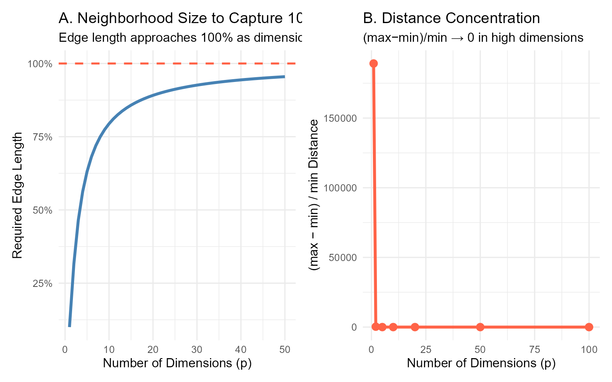
Code explanation:
dist(X)computes the Euclidean distance matrix for all pairs of rows.diag(D) <- NAremoves self-distances (which are 0).(0.10)^(1/p_seq)directly implements the hypercube edge-length formula — a vectorized calculation across all dimensions simultaneously.- The two plots together show both faces of the curse: Panel A shows that local neighborhoods must become global, Panel B shows that all pairwise distances converge.
10.5 Exercises
TipExercise 7.1
- Extend the distance concentration simulation to \(p = 200\) and \(p = 500\). Does the ratio continue to decrease?
- Repeat the simulation with \(n = 1000\) points. Does a larger sample size solve the concentration problem?
- In your own words, explain why K-nearest neighbors classification is expected to perform poorly on a dataset with 500 features and 200 observations.
11 Principal Component Analysis (PCA)
11.1 Introduction
Principal Component Analysis is the most widely used method for linear dimension reduction. It finds a new set of orthogonal axes — the principal components — that are linear combinations of the original variables, ordered so that the first component captures the maximum variance, the second captures the maximum remaining variance orthogonal to the first, and so on. PCA is unsupervised: it uses only the structure of \(X\), not any outcome variable \(Y\).
11.2 Theory
11.2.1 Mathematical Foundation
Given \(n\) observations of \(p\) variables, arranged in a centered data matrix \(\mathbf{X}\) (each column has mean zero), PCA finds the directions \(\mathbf{w}_k\) that maximize variance:
\[\mathbf{w}_1 = \arg\max_{\|\mathbf{w}\|=1} \text{Var}(\mathbf{X}\mathbf{w})\]
The solution is the eigendecomposition of the sample covariance matrix \(\mathbf{S} = \frac{1}{n-1}\mathbf{X}^T\mathbf{X}\):
\[\mathbf{S}\mathbf{w}_k = \lambda_k \mathbf{w}_k\]
where \(\lambda_k\) are eigenvalues (variance explained by each component) and \(\mathbf{w}_k\) are eigenvectors (loadings — the weights of each original variable in the component).
The principal component scores (projections of observations onto new axes) are:
\[\mathbf{Z} = \mathbf{X}\mathbf{W}\]
where \(\mathbf{W} = [\mathbf{w}_1, \mathbf{w}_2, \ldots, \mathbf{w}_k]\).
11.2.2 Proportion of Variance Explained
The proportion of total variance explained by component \(k\) is:
\[\text{PVE}_k = \frac{\lambda_k}{\sum_{j=1}^{p} \lambda_j}\]
The cumulative PVE is used to decide how many components to retain. Common thresholds: retain enough components to explain 70–90% of total variance.
11.2.3 Key Assumptions and Properties
- Components are orthogonal (uncorrelated with each other).
- PCA finds linear combinations only — it cannot capture non-linear structure.
- PCA is scale-sensitive: always standardize variables (Z-score) before PCA unless all variables are measured in the same units.
- The components are ordered by variance explained, not by interpretability.
11.2.4 Loadings vs. Scores
| Term | Definition | Interpretation |
|---|---|---|
| Loadings \(\mathbf{w}_k\) | Coefficients of original variables in the \(k\)-th component | How much each variable contributes |
| Scores \(z_{ik}\) | Projection of observation \(i\) onto component \(k\) | Coordinates of observations in new space |
| Biplot | Overlays scores and loadings | Shows observations and variables together |
11.3 Example: PCA on Student Exam Data
Example 7.2. A dataset records scores on 5 subjects (Math, Physics, Chemistry, History, Literature) for 100 students. PCA reveals:
- PC1 (explains 45% variance): high positive loadings on all subjects — a general academic ability factor.
- PC2 (explains 22% variance): high positive loadings on Math/Physics/Chemistry, negative on History/Literature — a STEM vs. Humanities contrast.
Two components explain 67% of the total variance, reducing 5 dimensions to 2 while retaining most information.
11.4 R Example: PCA
Importance of components:
PC1 PC2 PC3 PC4
Standard deviation 1.7084 0.9560 0.38309 0.14393
Proportion of Variance 0.7296 0.2285 0.03669 0.00518
Cumulative Proportion 0.7296 0.9581 0.99482 1.00000| Variable | PC1 | PC2 | PC3 | PC4 |
|---|---|---|---|---|
| Sepal.Length | 0.5211 | -0.3774 | 0.7196 | 0.2613 |
| Sepal.Width | -0.2693 | -0.9233 | -0.2444 | -0.1235 |
| Petal.Length | 0.5804 | -0.0245 | -0.1421 | -0.8014 |
| Petal.Width | 0.5649 | -0.0669 | -0.6343 | 0.5236 |
| Component | Eigenvalue | % Variance | Cumulative % |
|---|---|---|---|
| PC1 | 2.9185 | 72.96 | 72.96 |
| PC2 | 0.9140 | 22.85 | 95.81 |
| PC3 | 0.1468 | 3.67 | 99.48 |
| PC4 | 0.0207 | 0.52 | 100.00 |
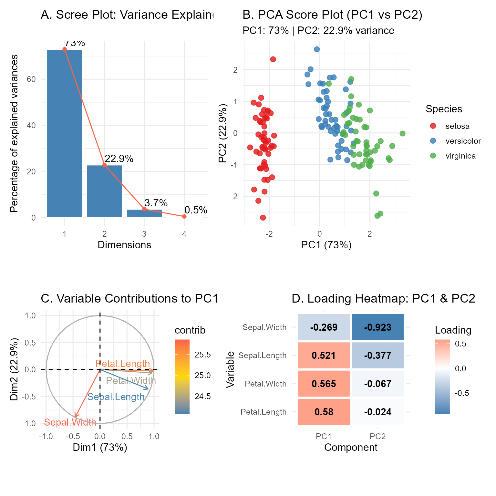
Code explanation:
prcomp(X, center, scale.)performs PCA. When data is pre-scaled, setcenter = FALSEandscale. = FALSEto avoid double-standardization.pca_result$rotationcontains the loadings matrix;pca_result$xcontains the scores.fviz_eig()andfviz_pca_var()fromfactoextraproduce publication-ready PCA diagnostics with minimal code.- The loading heatmap (Panel D) makes the contribution of each original variable to each component immediately readable.
11.5 Exercises
TipExercise 7.2
Using the mtcars dataset (all numeric variables):
- Standardize the data and perform PCA. How many components are needed to explain 80% of variance?
- Interpret the loadings of PC1 and PC2. What underlying dimension does each represent?
- Create a score plot colored by number of cylinders (
cyl). Do cars cluster by cylinder count in PC space? - Which original variable contributes most to PC1? Use
fviz_contrib().
TipExercise 7.3 (Challenge)
Apply PCA to the USArrests dataset.
- Should you standardize before PCA? Compare results with and without standardization. Why does it matter here?
- Produce a full biplot using
fviz_pca_biplot(). Which states are most similar? Which variables cluster together? - Compute the reconstruction error for \(k = 1, 2, 3\) components. At what \(k\) does reconstruction become adequate?
12 Factor Analysis
12.1 Introduction
Factor Analysis (FA) shares mathematical roots with PCA but has a fundamentally different purpose. PCA is a purely descriptive technique for summarizing variance. FA is a latent variable model — it assumes the observed variables are caused by a smaller number of unobserved latent factors, and seeks to identify these underlying constructs. FA is the method of choice when the research question is about the structure of a psychological scale, the dimensions of a concept, or the latent traits driving observed responses.
12.2 Theory
12.2.1 The Factor Model
The common factor model expresses each observed variable \(x_j\) as a linear combination of \(m\) common factors \(F_1, F_2, \ldots, F_m\) plus a unique error:
\[x_j = \lambda_{j1}F_1 + \lambda_{j2}F_2 + \cdots + \lambda_{jm}F_m + \varepsilon_j\]
where: - \(\lambda_{jk}\) are factor loadings — how strongly factor \(k\) influences variable \(j\) - \(F_k\) are common factors — latent variables shared across observed variables - \(\varepsilon_j\) is the unique factor — variance in \(x_j\) not explained by common factors
The communality of variable \(j\) is the proportion of its variance explained by the common factors: \[h_j^2 = \sum_{k=1}^{m} \lambda_{jk}^2\]
The uniqueness (specific variance) is \(1 - h_j^2\).
12.2.2 PCA vs. Factor Analysis
| Feature | PCA | Factor Analysis |
|---|---|---|
| Goal | Maximize variance explained | Identify latent factors |
| Model | No error term | Includes unique variance |
| Factors | As many as variables | Fewer than variables |
| Interpretation | Components are combinations of variables | Variables are indicators of factors |
| Use case | Data compression, preprocessing | Scale development, construct validation |
12.2.3 Factor Rotation
Unrotated factor solutions are often difficult to interpret — many variables have moderate loadings on all factors. Rotation transforms the factor axes to achieve simple structure: each variable loads highly on one factor and near-zero on others.
Orthogonal rotation (Varimax): Keeps factors uncorrelated. Maximizes the variance of squared loadings within each factor — produces clean, interpretable factors.
Oblique rotation (Promax, Oblimin): Allows factors to be correlated. More realistic when underlying constructs are expected to relate to each other (e.g., verbal and spatial ability in intelligence research).
12.2.4 Determining the Number of Factors
| Criterion | Rule |
|---|---|
| Kaiser criterion | Retain factors with eigenvalue > 1 |
| Scree plot | Retain factors before the “elbow” |
| Parallel analysis | Compare eigenvalues to random data eigenvalues |
| Theory | Retain the number justified by the research context |
Parallel analysis is the most defensible criterion and is recommended for research purposes.
12.3 Example: Factor Analysis of a Psychological Scale
Example 7.3. A questionnaire measures student engagement with 10 items across two hypothesized dimensions: academic engagement (items 1–5) and social engagement (items 6–10). FA with 2 factors and Varimax rotation produces:
- Factor 1: High loadings (0.70–0.85) on items 1–5, near-zero on items 6–10 → Academic Engagement.
- Factor 2: Near-zero on items 1–5, high loadings (0.65–0.80) on items 6–10 → Social Engagement.
- Communalities range from 0.52 to 0.78 — most item variance is captured.
- Cronbach’s alpha = 0.84 (Factor 1), 0.79 (Factor 2) — good internal consistency.
12.4 R Example: Factor Analysis
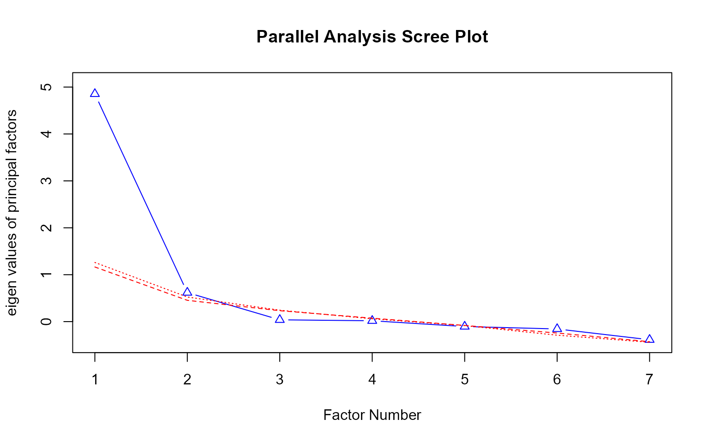
Parallel analysis suggests that the number of factors = 1 and the number of components = NA
Loadings:
ML2 ML1
mpg -0.842 -0.365
cyl 0.778 0.543
disp 0.881 0.378
hp 0.608 0.672
drat -0.783
wt 0.951
qsec -0.995
ML2 ML1
SS loadings 3.983 2.029
Proportion Var 0.569 0.290
Cumulative Var 0.569 0.859| ML2 | ML1 | Communality | Uniqueness | |
|---|---|---|---|---|
| mpg | -0.842 | -0.365 | 0.842 | 0.158 |
| cyl | 0.778 | 0.543 | 0.901 | 0.099 |
| disp | 0.881 | 0.378 | 0.920 | 0.080 |
| hp | 0.608 | 0.672 | 0.821 | 0.179 |
| drat | -0.783 | -0.041 | 0.615 | 0.385 |
| wt | 0.951 | 0.114 | 0.917 | 0.083 |
| qsec | -0.065 | -0.995 | 0.995 | 0.005 |
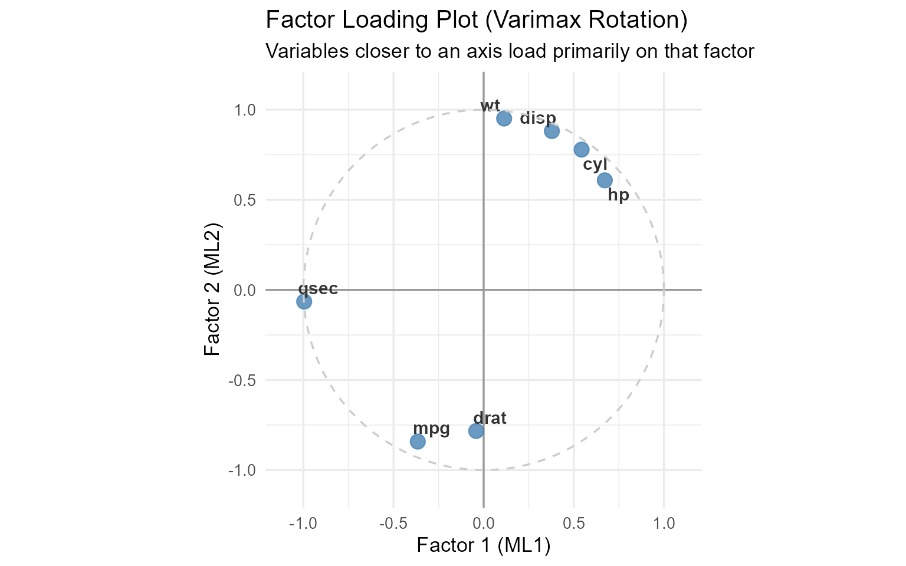
Code explanation:
psych::fa.parallel()conducts parallel analysis — the recommended method for choosing the number of factors.psych::fa(data, nfactors, rotate, fm)fits the factor model.fm = "ml"uses maximum likelihood estimation;rotate = "varimax"applies orthogonal rotation.print(loadings, cutoff = 0.3)suppresses loadings below 0.3 to highlight the simple structure — a standard reporting convention.- The loading plot (also called a factor map) places each variable as a point; variables near the same axis are dominated by the same factor.
12.5 Exercises
TipExercise 7.4
Using the Harman23.cor dataset in the psych package (correlations among 23 psychological tests):
- Perform parallel analysis to determine the number of factors.
- Fit the factor model with Varimax rotation.
- Interpret each factor by examining which variables load on it.
- Compare Varimax (orthogonal) to Oblimin (oblique) rotation. Which produces a cleaner simple structure?
13 Linear Discriminant Analysis (LDA)
13.1 Introduction
PCA and FA are unsupervised — they ignore the class labels of observations. When class membership is known, we can do better: Linear Discriminant Analysis finds the linear combination of variables that maximally separates predefined classes while minimizing within-class variation. LDA is simultaneously a dimension reduction technique and a classification method. It is the supervised counterpart to PCA — and when class structure is strong, it provides far more informative low-dimensional representations.
13.2 Theory
13.2.1 Fisher’s Discriminant Criterion
LDA finds the projection vector \(\mathbf{w}\) that maximizes the ratio of between-class variance to within-class variance:
\[J(\mathbf{w}) = \frac{\mathbf{w}^T \mathbf{S}_B \mathbf{w}}{\mathbf{w}^T \mathbf{S}_W \mathbf{w}}\]
where: - \(\mathbf{S}_B = \sum_{k=1}^{K} n_k (\bar{\mathbf{x}}_k - \bar{\mathbf{x}})(\bar{\mathbf{x}}_k - \bar{\mathbf{x}})^T\) is the between-class scatter matrix - \(\mathbf{S}_W = \sum_{k=1}^{K} \sum_{i \in C_k} (\mathbf{x}_i - \bar{\mathbf{x}}_k)(\mathbf{x}_i - \bar{\mathbf{x}}_k)^T\) is the within-class scatter matrix
The solution is the generalized eigendecomposition \(\mathbf{S}_W^{-1}\mathbf{S}_B\mathbf{w} = \lambda\mathbf{w}\).
13.2.2 Number of Discriminants
For \(K\) classes and \(p\) variables, at most \(\min(K-1, p)\) discriminant functions exist. For \(K = 3\) classes, there are at most 2 discriminants — allowing a complete 2D visualization of class separation.
13.2.3 LDA Assumptions
- Observations within each class follow a multivariate normal distribution.
- All classes share the same covariance matrix (homoscedasticity).
- Variables are linearly related to the discriminant scores.
Quadratic Discriminant Analysis (QDA) relaxes assumption 2, allowing class-specific covariance matrices, at the cost of more parameters.
13.2.4 LDA vs. PCA
| Feature | PCA | LDA |
|---|---|---|
| Supervision | Unsupervised | Supervised (uses class labels) |
| Objective | Maximize total variance | Maximize class separation |
| Max dimensions | \(p\) | \(K-1\) |
| Best when | No class labels available | Class labels known |
13.3 Example: LDA for Species Separation
Example 7.4. For the iris dataset (3 species, 4 variables), LDA produces 2 discriminant functions. LD1 explains 99.1% of between-group variance, primarily contrasting setosa against the other two species. LD2 (0.9%) separates versicolor from virginica. Together, the 2 LDs provide near-perfect visual separation of all three species in 2D — far cleaner than the PCA projection.
13.4 R Example: Linear Discriminant Analysis
Call:
lda(Species ~ ., data = iris)
Prior probabilities of groups:
setosa versicolor virginica
0.3333333 0.3333333 0.3333333
Group means:
Sepal.Length Sepal.Width Petal.Length Petal.Width
setosa 5.006 3.428 1.462 0.246
versicolor 5.936 2.770 4.260 1.326
virginica 6.588 2.974 5.552 2.026
Coefficients of linear discriminants:
LD1 LD2
Sepal.Length 0.8293776 -0.02410215
Sepal.Width 1.5344731 -2.16452123
Petal.Length -2.2012117 0.93192121
Petal.Width -2.8104603 -2.83918785
Proportion of trace:
LD1 LD2
0.9912 0.0088 Proportion of between-group variance:LD1: 99.12 %LD2: 0.88 %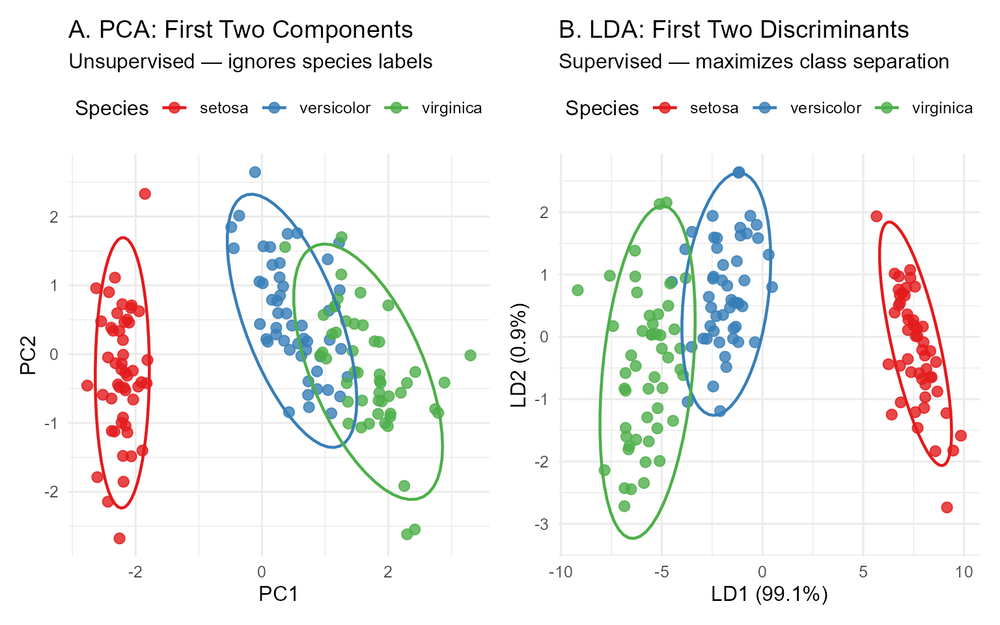
| setosa | versicolor | virginica | |
|---|---|---|---|
| setosa | 50 | 0 | 0 |
| versicolor | 0 | 48 | 1 |
| virginica | 0 | 2 | 49 |
Overall accuracy: 98 %Code explanation:
MASS::lda(formula, data)fits the LDA model. The formula specifies the outcome (class variable) on the left, predictors on the right.predict(lda_result, data)returns a list with$class(predicted labels) and$x(discriminant scores).stat_ellipse(level = 0.95)draws 95% confidence ellipses for each group — a clean way to show class separation visually.- Comparing PCA (Panel A) and LDA (Panel B) side by side demonstrates LDA’s advantage when class structure is the primary interest.
13.5 Exercises
TipExercise 7.5
Using the Wine dataset from the rattle package (or simulate a 3-class dataset):
- Fit LDA and compute discriminant scores for all observations.
- Plot the first two discriminant functions. How well do the classes separate?
- Compare classification accuracy of LDA to a simple decision tree on the same data.
- Test the homoscedasticity assumption using
biotools::boxM(). If violated, fit QDA (MASS::qda()) and compare accuracy.
14 t-SNE
14.1 Introduction
PCA and LDA produce linear projections — they can only capture structure that is linearly embedded in the data. Many real high-dimensional datasets have non-linear structure: clusters that are curved, nested, or interleaved in ways that no linear projection can reveal. t-distributed Stochastic Neighbor Embedding (t-SNE), developed by van der Maaten and Hinton (2008), is the dominant method for non-linear visualization of high-dimensional data. It is widely used in genomics, single-cell biology, NLP (visualizing word embeddings), and image analysis.
14.2 Theory
14.2.1 The t-SNE Algorithm
t-SNE works in two steps:
Step 1 — High-dimensional similarities: For each pair of points \(i, j\) in the original space, compute a conditional probability \(p_{j|i}\) proportional to the Gaussian density centered at \(x_i\):
\[p_{j|i} = \frac{\exp(-\|x_i - x_j\|^2 / 2\sigma_i^2)}{\sum_{k \neq i} \exp(-\|x_i - x_k\|^2 / 2\sigma_i^2)}\]
Symmetrize: \(p_{ij} = (p_{j|i} + p_{i|j}) / 2n\).
Step 2 — Low-dimensional similarities: In the 2D map, use a Student’s t-distribution (heavier tails than Gaussian) for similarities:
\[q_{ij} = \frac{(1 + \|y_i - y_j\|^2)^{-1}}{\sum_{k \neq l}(1 + \|y_k - y_l\|^2)^{-1}}\]
Optimization: Minimize the KL divergence between \(P\) and \(Q\) using gradient descent:
\[\text{KL}(P \| Q) = \sum_{i \neq j} p_{ij} \log \frac{p_{ij}}{q_{ij}}\]
The heavy-tailed t-distribution in the low-dimensional space allows moderate distances to be represented as large distances — preventing the “crowding problem” that plagues Gaussian-based methods.
14.2.2 The Perplexity Parameter
The perplexity controls the effective number of neighbors each point considers. It is the most important hyperparameter:
\[\text{Perplexity} = 2^{H(P_i)}, \quad H(P_i) = -\sum_j p_{j|i} \log_2 p_{j|i}\]
Typical range: 5–50. Low perplexity focuses on local structure (tight clusters); high perplexity captures more global structure. The optimal value depends on the dataset — always try multiple values.
14.2.3 Critical Limitations of t-SNE
Warningt-SNE Interpretation Cautions
- Distances between clusters are not meaningful — cluster separation in a t-SNE plot does not represent true distances in the original space.
- Cluster sizes are not meaningful — a large cluster in t-SNE may not be larger than a small one in reality.
- Results are not reproducible without fixing the random seed — always set
set.seed(). - t-SNE is for visualization only — do not use t-SNE coordinates as features for downstream modeling.
- Perplexity must be tuned — a single plot can be misleading; always explore multiple perplexity values.
14.3 Example: t-SNE on MNIST-style Data
Example 7.5. t-SNE applied to the 784-dimensional MNIST handwritten digit dataset (60,000 images) produces a 2D map where each digit class forms a distinct cluster. Digits 4 and 9 partially overlap (visually similar), as do 3 and 5. This structure is completely invisible in a PCA projection. The t-SNE visualization directly reveals the intrinsic difficulty of the classification problem.
14.4 R Example: t-SNE
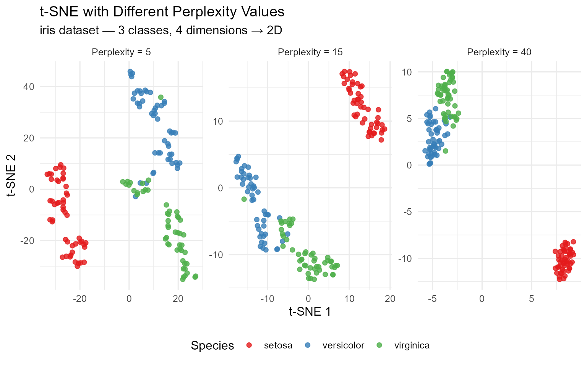
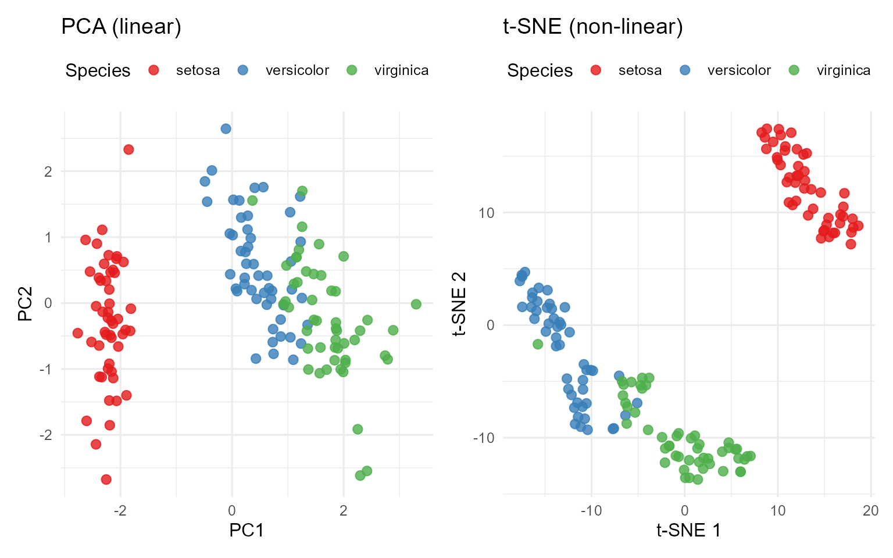
Code explanation:
Rtsne::Rtsne(X, dims, perplexity, max_iter)runs t-SNE. Always setset.seed()before calling — results are stochastic.check_duplicates = FALSEprevents errors when the dataset has identical rows (iris has some).lapply()over perplexity values followed bybind_rows()cleanly generates multiple t-SNE runs for comparison.facet_wrap(scales = "free")is essential for t-SNE comparisons — axes have no consistent meaning across runs, so free scales prevent misleading size comparisons.
14.5 Exercises
TipExercise 7.6
Using the digits dataset (available via keras or as a subset of MNIST):
- Run t-SNE with perplexities 5, 30, and 100. How does the cluster structure change?
- Run PCA on the same data and compare the first two PCs to the t-SNE plot. Which reveals clearer cluster structure?
- Does t-SNE preserve global structure (e.g., similarity between digit classes)? How would you verify this?
TipExercise 7.7
Apply both PCA and t-SNE to the mtcars dataset.
- In the PCA plot, color points by
cyl(number of cylinders). In the t-SNE plot, do the same. - Do the two methods agree on which cars are most similar?
- Given that
mtcarshas only 32 observations and 11 variables, is t-SNE appropriate here? What are the risks?
15 Feature Selection Methods
15.1 Introduction
Feature extraction (PCA, LDA, t-SNE) creates new variables as combinations of the originals. Feature selection instead chooses a subset of the original variables to keep, discarding the rest. Feature selection preserves interpretability — the selected features remain the original, meaningful variables. It is essential for high-dimensional datasets where many features are redundant, irrelevant, or noisy, and where model interpretability is required.
15.2 Theory
15.2.1 Filter Methods
Filter methods assess the relevance of each feature independently of any model, using statistical measures. They are fast and scalable but ignore feature interactions.
Variance threshold: Remove features with near-zero variance — they carry little information.
Correlation filter: Remove one variable from each highly correlated pair (\(|r| > 0.90\)).
Statistical tests: - ANOVA F-test or mutual information for continuous features vs. categorical outcome. - Chi-square test for categorical feature vs. categorical outcome. - Spearman correlation for continuous feature vs. continuous outcome.
15.2.2 Wrapper Methods
Wrapper methods evaluate feature subsets by training and testing a model on each subset. They account for feature interactions but are computationally expensive.
Forward selection: Start with no features; add the feature that most improves model performance at each step.
Backward elimination: Start with all features; remove the feature whose removal least degrades performance.
Recursive Feature Elimination (RFE): Fit the model on all features, rank by importance, remove the least important, and repeat until the desired number remains.
15.2.3 Embedded Methods
Embedded methods perform feature selection as part of model training — the most computationally efficient approach.
LASSO (L1 regularization): Shrinks some coefficients exactly to zero, effectively excluding those features.
Ridge (L2 regularization): Shrinks coefficients toward zero but rarely to exactly zero — does not perform selection.
Random Forest importance: Measures each feature’s contribution to reducing impurity across all trees. The varImp() function in caret extracts these.
15.2.4 Comparison
| Method | Speed | Interactions | Interpretability | Best For |
|---|---|---|---|---|
| Filter | Fast | No | High | Preprocessing, first pass |
| Wrapper | Slow | Yes | Medium | Final model tuning |
| Embedded | Medium | Partial | Medium | Regularized models |
15.3 Example: Feature Selection for Predicting MPG
Example 7.6. In mtcars, 10 potential predictors of mpg are available. Filter: correlation analysis removes disp (highly correlated with cyl, \(r = 0.90\)). Wrapper RFE: selects wt, cyl, hp as the top 3. Embedded (LASSO): retains wt, hp, am with non-zero coefficients. All methods agree that wt and hp are the most important predictors.
15.4 R Example: Feature Selection
| Variable 1 | Variable 2 | Pearson r |
|---|---|---|
| cyl | disp | 0.902 |
| disp | wt | 0.888 |
RFE Selected Features:[1] "wt" "am" "gear"
Optimal number of features: 3 | Variable | Coefficient |
|---|---|
| wt | -2.6498 |
| cyl | -1.5825 |
| hp | -0.8011 |
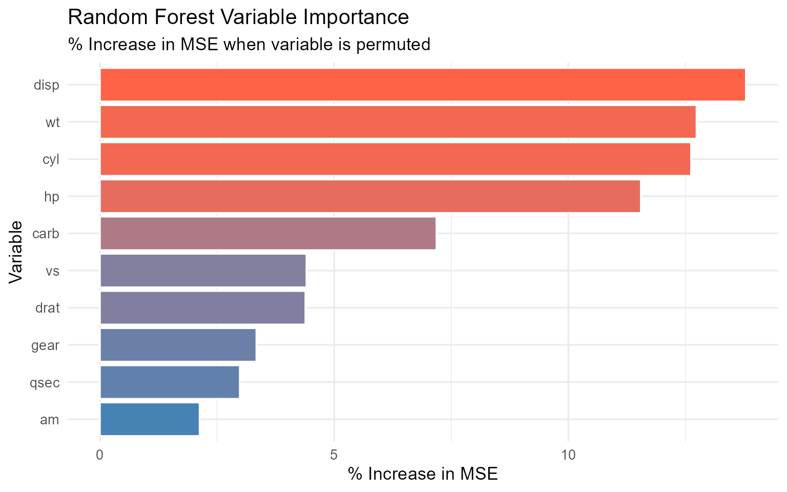
Code explanation:
rfe(x, y, sizes, rfeControl)runs Recursive Feature Elimination using cross-validation.lmFuncsspecifies linear regression as the model.cv.glmnet(X, y, alpha=1)fits LASSO with cross-validated lambda selection.alpha=1is LASSO;alpha=0is Ridge; values between are Elastic Net.randomForest(formula, importance=TRUE)computes permutation-based variable importance — the gold standard for non-linear feature ranking.
15.5 Exercises
TipExercise 7.8
Using the Boston dataset from MASS (housing prices):
- Apply correlation filter: remove features with \(|r| > 0.85\) with any other feature.
- Apply RFE with cross-validation to identify the top 5 features for predicting
medv. - Fit a LASSO model. Which features are retained at
lambda.minvs.lambda.1se? - Do all three methods agree on the most important features? Summarize in a comparison table.
16 Evaluating Dimension Reduction
16.1 Introduction
Dimension reduction involves an inherent trade-off: more dimensions retain more information but defeat the purpose of reduction. Fewer dimensions are more interpretable and computationally efficient but lose information. Evaluating a dimension reduction solution means answering: How many dimensions do we need, and how much do we lose by using fewer? This section provides a principled toolkit of criteria for making this decision.
16.2 Theory
16.2.1 Scree Plot and the Elbow Rule
A scree plot displays eigenvalues (or variance explained) against the component number. The elbow — where the curve bends and flattens — indicates the number of components beyond which additional components contribute little. The elbow is identified visually and is subjective; it works best when there is a clear break.
16.2.2 Kaiser’s Criterion
For PCA on standardized data, retain components with eigenvalue > 1. The rationale: a component with eigenvalue < 1 explains less variance than a single original standardized variable — it is not “earning its keep.” This criterion tends to retain too many components in large datasets.
16.2.3 Cumulative Variance Threshold
Retain the minimum number of components needed to explain a specified proportion of total variance (commonly 70%, 80%, or 90%). The threshold should be chosen based on the purpose:
- For visualization: 2–3 components (interpretability is paramount)
- For preprocessing before modeling: 80–90% variance
- For lossy compression: problem-specific
16.2.4 Reconstruction Error
The reconstruction error measures how well the reduced representation can recreate the original data:
\[\text{RE}(k) = \frac{1}{n} \|\mathbf{X} - \hat{\mathbf{X}}_k\|_F^2 = \sum_{j=k+1}^{p} \lambda_j\]
where \(\hat{\mathbf{X}}_k = \mathbf{Z}_k \mathbf{W}_k^T\) is the rank-\(k\) approximation. The reconstruction error equals the sum of discarded eigenvalues — confirming that PCA is the optimal linear reconstruction.
16.2.5 Parallel Analysis
Compare the eigenvalues from the actual data to eigenvalues from random data of the same dimensions. Retain components whose eigenvalues exceed the corresponding random eigenvalues. This is more rigorous than the elbow rule or Kaiser’s criterion and is the current methodological recommendation.
16.2.6 Cross-Validation for Dimension Selection
In a supervised context, use cross-validation to evaluate predictive performance as a function of the number of retained dimensions — the optimal \(k\) balances dimensionality reduction against predictive accuracy.
16.3 Example: Choosing \(k\) for PCA
Example 7.7. For a dataset with 20 variables:
| Criterion | Suggested \(k\) |
|---|---|
| Elbow rule | 3 |
| Kaiser (eigenvalue > 1) | 5 |
| 80% variance | 4 |
| Parallel analysis | 3 |
| Cross-validation (classification) | 4 |
Most criteria agree on 3–4 components. The final choice of \(k = 4\) is justified by the 80% variance threshold, confirmed by parallel analysis suggesting 3 (conservative) and cross-validation suggesting 4 (predictive).
16.4 R Example: Evaluating Dimension Reduction
| Component | Eigenvalue | % Variance | Cumulative % |
|---|---|---|---|
| 1 | 6.6084 | 60.08 | 60.08 |
| 2 | 2.6505 | 24.10 | 84.17 |
| 3 | 0.6272 | 5.70 | 89.87 |
| 4 | 0.2696 | 2.45 | 92.32 |
| 5 | 0.2235 | 2.03 | 94.36 |
| 6 | 0.2116 | 1.92 | 96.28 |
| 7 | 0.1353 | 1.23 | 97.51 |
| 8 | 0.1229 | 1.12 | 98.63 |
| 9 | 0.0770 | 0.70 | 99.33 |
| 10 | 0.0520 | 0.47 | 99.80 |
| 11 | 0.0220 | 0.20 | 100.00 |
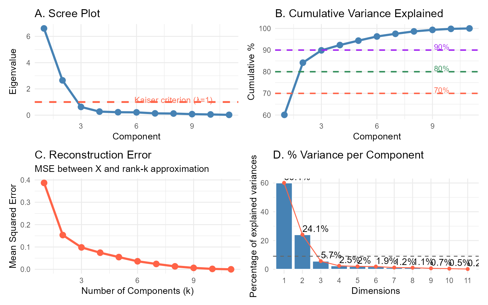
Code explanation:
Z[, 1:k] %*% t(W[, 1:k])computes the rank-\(k\) reconstruction of the standardized data. The reconstruction error decreases monotonically as \(k\) increases.- The four panels together provide a complete evaluation framework: scree plot for elbow, cumulative variance for threshold, reconstruction error for information loss, and bar chart for per-component contribution.
- The dashed line at \(100/p\) in Panel D represents the “equal contribution” baseline — components above this line explain more than their fair share.
16.5 Exercises
TipExercise 7.9
Using the decathlon2 dataset from factoextra:
- Perform PCA and apply all four criteria (elbow, Kaiser, 80% variance, parallel analysis) to choose \(k\).
- Do the criteria agree? Which \(k\) would you choose and why?
- Compute reconstruction errors for \(k = 1, \ldots, p\). At what \(k\) does the error drop below 20% of the original variance?
TipExercise 7.10 (Challenge)
Compare PCA and t-SNE as preprocessing steps for K-means clustering on the iris dataset.
- Cluster using raw data (no reduction), first 2 PCA components, and 2 t-SNE dimensions.
- Compare cluster quality using the Adjusted Rand Index (
mclust::adjustedRandIndex()). - Which preprocessing leads to better recovery of the true species groups? Why?
17 Chapter Lab Activity: Dimension Reduction Pipeline with decathlon2
17.1 Objectives
In this lab you will apply the full dimension reduction pipeline — PCA, FA, LDA, t-SNE, feature selection, and evaluation — to the decathlon2 dataset from factoextra. This dataset records performance of athletes across 10 events, providing a rich multivariate structure with a clear theoretical interpretation (general athletic ability vs. event-specific skills).
17.2 The Dataset
Dimensions: 27 athletes × 10 events| X100m | Long.jump | Shot.put | High.jump | X400m | X110m.hurdle | Discus | Pole.vault | Javeline | X1500m | |
|---|---|---|---|---|---|---|---|---|---|---|
| SEBRLE | 11.04 | 7.58 | 14.83 | 2.07 | 49.81 | 14.69 | 43.75 | 5.02 | 63.19 | 291.7 |
| CLAY | 10.76 | 7.40 | 14.26 | 1.86 | 49.37 | 14.05 | 50.72 | 4.92 | 60.15 | 301.5 |
| BERNARD | 11.02 | 7.23 | 14.25 | 1.92 | 48.93 | 14.99 | 40.87 | 5.32 | 62.77 | 280.1 |
| YURKOV | 11.34 | 7.09 | 15.19 | 2.10 | 50.42 | 15.31 | 46.26 | 4.72 | 63.44 | 276.4 |
| ZSIVOCZKY | 11.13 | 7.30 | 13.48 | 2.01 | 48.62 | 14.17 | 45.67 | 4.42 | 55.37 | 268.0 |
| McMULLEN | 10.83 | 7.31 | 13.76 | 2.13 | 49.91 | 14.38 | 44.41 | 4.42 | 56.37 | 285.1 |
17.3 Lab Task 1: PCA — Structure of Athletic Performance
| Component | Eigenvalue | % Variance | Cumulative % |
|---|---|---|---|
| PC1 | 3.750 | 37.50 | 37.50 |
| PC2 | 1.745 | 17.45 | 54.95 |
| PC3 | 1.518 | 15.18 | 70.13 |
| PC4 | 1.032 | 10.32 | 80.45 |
| PC5 | 0.618 | 6.18 | 86.63 |
| PC6 | 0.428 | 4.28 | 90.91 |
| PC7 | 0.326 | 3.26 | 94.17 |
| PC8 | 0.279 | 2.79 | 96.97 |
| PC9 | 0.191 | 1.91 | 98.88 |
| PC10 | 0.112 | 1.12 | 100.00 |
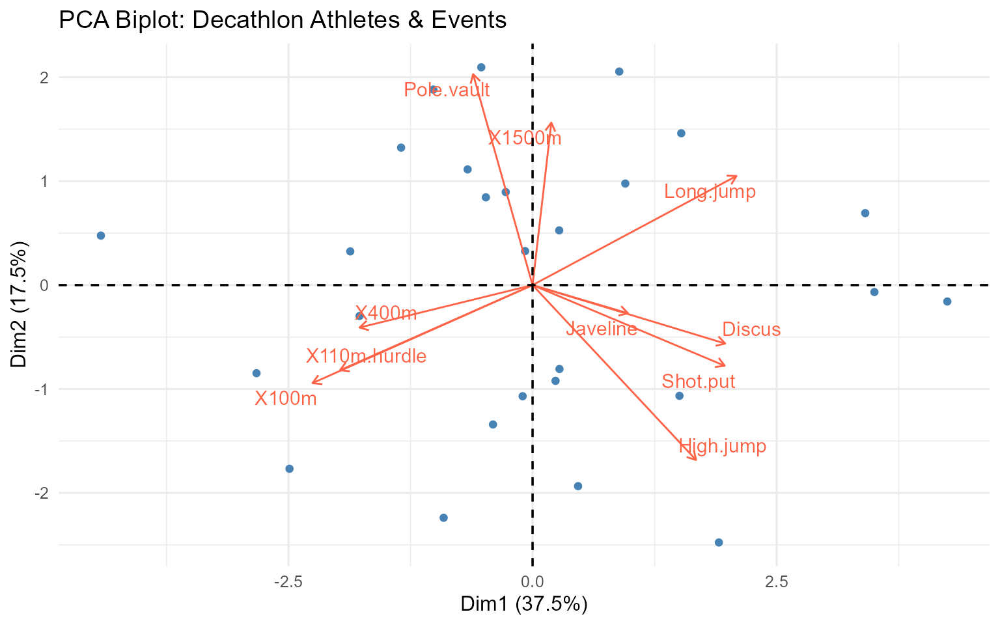
17.4 Lab Task 2: Factor Analysis — Latent Athletic Dimensions
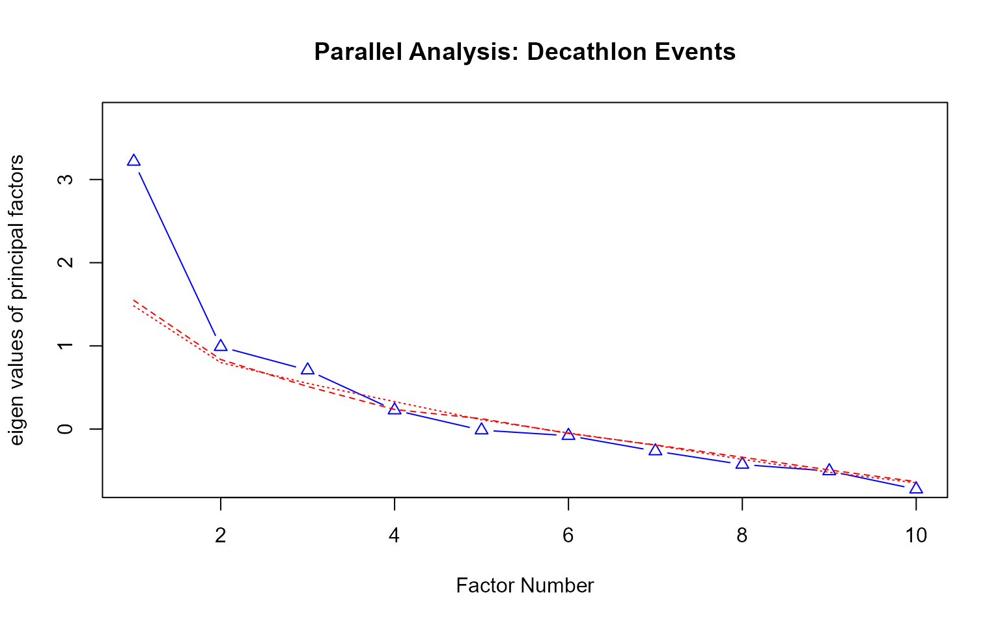
Parallel analysis suggests that the number of factors = 1 and the number of components = NA | Event | ML2 | ML1 | Communality | Uniqueness |
|---|---|---|---|---|
| X100m | 0.854 | -0.290 | 0.814 | 0.186 |
| Long.jump | -0.732 | 0.305 | 0.628 | 0.372 |
| Shot.put | -0.097 | 0.993 | 0.995 | 0.005 |
| High.jump | -0.166 | 0.563 | 0.344 | 0.656 |
| X400m | 0.645 | -0.146 | 0.437 | 0.563 |
| X110m.hurdle | 0.731 | -0.201 | 0.575 | 0.425 |
| Discus | -0.239 | 0.704 | 0.553 | 0.447 |
| Pole.vault | 0.025 | -0.069 | 0.005 | 0.995 |
| Javeline | -0.052 | 0.473 | 0.227 | 0.773 |
| X1500m | -0.157 | -0.005 | 0.025 | 0.975 |
17.5 Lab Task 3: t-SNE Visualization
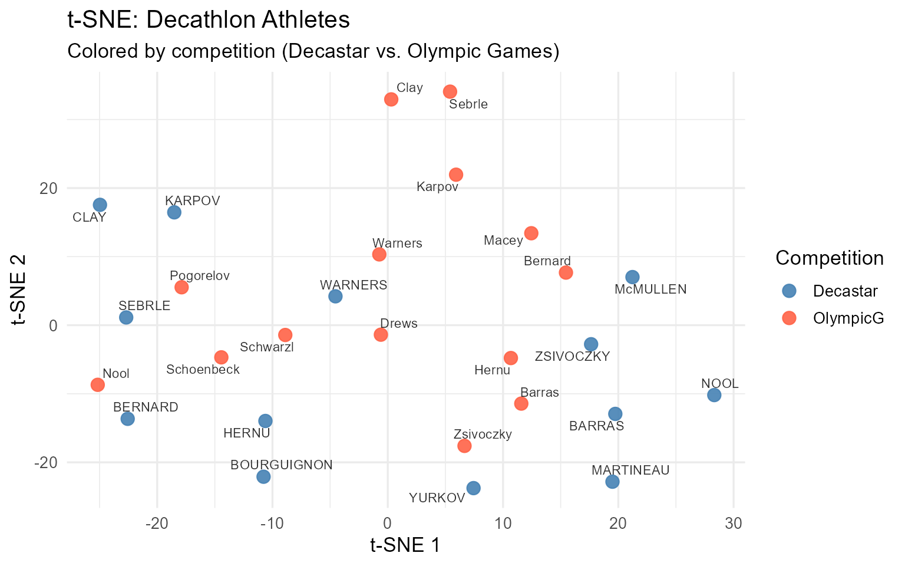
17.6 Lab Task 4: Feature Selection for Predicting Total Score
| Event | Correlation | |
|---|---|---|
| Discus | Discus | -0.633 |
| Shot.put | Shot.put | -0.604 |
| Long.jump | Long.jump | -0.499 |
| High.jump | High.jump | -0.498 |
| Javeline | Javeline | -0.430 |
| X100m | X100m | 0.374 |
| X400m | X400m | 0.368 |
| X1500m | X1500m | -0.286 |
| X110m.hurdle | X110m.hurdle | 0.197 |
| Pole.vault | Pole.vault | -0.014 |
17.7 Lab Task 5: Comprehensive Evaluation
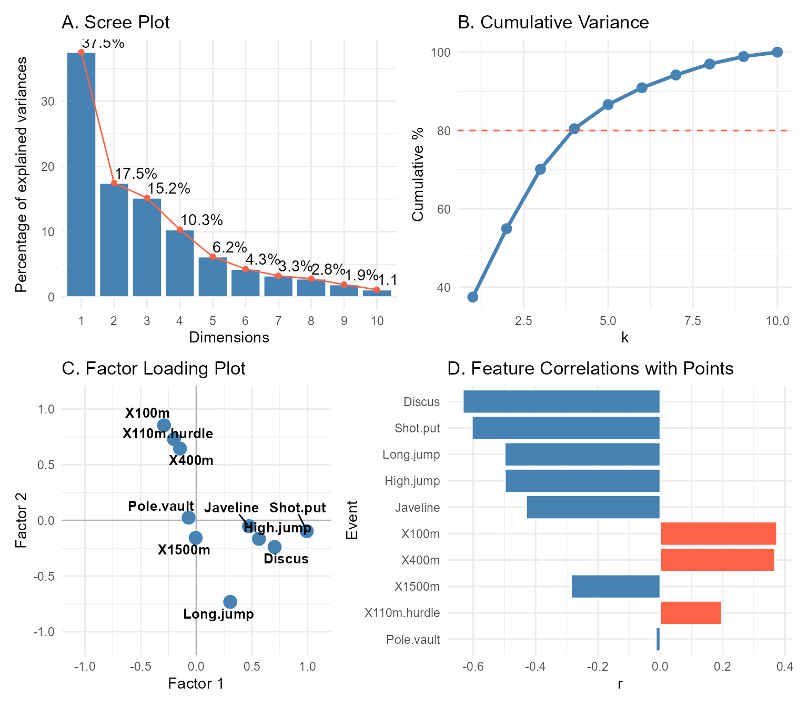
17.8 Lab Discussion Questions
Answer the following in writing:
PCA Interpretation: Based on the biplot in Lab Task 1, which events cluster together? What does PC1 represent physically (hint: consider which events load positively and which negatively on PC1)?
PCA vs. FA: Both PCA and FA reduce the decathlon data to 2 dimensions. Compare the loadings — do they tell a similar story? When would you prefer FA over PCA for this dataset?
t-SNE Findings: In Lab Task 3, do athletes from the same competition (Decastar vs. Olympic Games) cluster together in the t-SNE plot? What would it mean if they did not?
Feature Selection: Based on Lab Task 4, which events are most predictive of total points? Is this consistent with the PCA loadings? What events might be candidates for removal from a predictive model?
Curse of Dimensionality: The decathlon dataset has 27 observations and 10 variables. Is this ratio (observations to variables) concerning? How does dimension reduction help, and what are the risks of reducing to 2 dimensions?
18 Chapter Summary
18.1 Summary
This chapter established dimension reduction as an essential toolkit for working with high-dimensional data:
- The curse of dimensionality — sparsity, distance concentration, and exponential sample requirements make direct analysis of high-dimensional data unreliable; dimension reduction is a necessary response.
- PCA — the foundational linear method; finds orthogonal components maximizing variance; requires standardization; interpreted via loadings and score plots.
- Factor Analysis — a latent variable model identifying unobserved constructs; rotation (Varimax, Oblimin) improves interpretability; distinct from PCA in purpose and assumptions.
- LDA — supervised reduction maximizing between-class separation; more informative than PCA when class labels are available; limited to \(K-1\) dimensions.
- t-SNE — non-linear visualization of complex structure; powerful but distances and cluster sizes are not interpretable; perplexity must be tuned; for visualization only.
- Feature selection — filter (fast, model-free), wrapper (slower, interaction-aware), and embedded (LASSO, RF importance) methods select original variables rather than creating new ones.
- Evaluation — scree plot, Kaiser criterion, cumulative variance, reconstruction error, and parallel analysis provide complementary perspectives for choosing the number of dimensions.
ImportantKey Formulas to Know
PCA Eigendecomposition: \[\mathbf{S}\mathbf{w}_k = \lambda_k \mathbf{w}_k, \quad \text{PVE}_k = \frac{\lambda_k}{\sum_j \lambda_j}\]
Reconstruction Error: \[\text{RE}(k) = \sum_{j=k+1}^{p} \lambda_j\]
Fisher’s LDA Criterion: \[J(\mathbf{w}) = \frac{\mathbf{w}^T \mathbf{S}_B \mathbf{w}}{\mathbf{w}^T \mathbf{S}_W \mathbf{w}}\]
Factor Model: \[x_j = \sum_{k=1}^{m} \lambda_{jk}F_k + \varepsilon_j, \quad h_j^2 = \sum_{k=1}^{m}\lambda_{jk}^2\]
t-SNE KL Divergence: \[\text{KL}(P \| Q) = \sum_{i \neq j} p_{ij} \log \frac{p_{ij}}{q_{ij}}\]
18.2 References
Bellman, R. (1957). Dynamic programming. Princeton University Press.
Fisher, R. A. (1936). The use of multiple measurements in taxonomic problems. Annals of Eugenics, 7(2), 179–188.
Friedman, J., Hastie, T., & Tibshirani, R. (2010). Regularization paths for generalized linear models via coordinate descent. Journal of Statistical Software, 33(1), 1–22.
Harrison, D., & Rubinfeld, D. L. (1978). Hedonic housing prices and the demand for clean air. Journal of Environmental Economics and Management, 5(1), 81–102.
Hastie, T., Tibshirani, R., & Friedman, J. (2009). The elements of statistical learning (2nd ed.). Springer. https://hastie.su.domains/ElemStatLearn/
Henderson, H. V., & Velleman, P. F. (1981). Building multiple regression models interactively. Biometrics, 37(2), 391–411.
Hotelling, H. (1933). Analysis of a complex of statistical variables into principal components. Journal of Educational Psychology, 24(6), 417–441.
James, G., Witten, D., Hastie, T., & Tibshirani, R. (2021). An introduction to statistical learning with applications in R (2nd ed.). Springer. https://www.statlearning.com
Kassambara, A. (2023). factoextra: Extract and visualize the results of multivariate data analyses (R package version 1.0.7). https://CRAN.R-project.org/package=factoextra
Krijthe, J. H. (2015). Rtsne: T-distributed stochastic neighbor embedding (R package version 0.15). https://github.com/jkrijthe/Rtsne
Kuhn, M. (2008). Building predictive models in R using the caret package. Journal of Statistical Software, 28(5), 1–26.
Lê, S., Josse, J., & Husson, F. (2008). FactoMineR: An R package for multivariate analysis. Journal of Statistical Software, 25(1), 1–18.
Maaten, L. van der, & Hinton, G. (2008). Visualizing data using t-SNE. Journal of Machine Learning Research, 9, 2579–2605.
Pedersen, T. L. (2022). patchwork: The composer of plots (R package version 1.1.2). https://CRAN.R-project.org/package=patchwork
R Core Team. (2024). R: A language and environment for statistical computing. R Foundation for Statistical Computing. https://www.R-project.org/
Revelle, W. (2023). psych: Procedures for psychological, psychometric, and personality research (R package version 2.3.6). Northwestern University.
Slowikowski, K. (2023). ggrepel: Automatically position non-overlapping text labels with ggplot2 (R package version 0.9.3). https://CRAN.R-project.org/package=ggrepel
Tibshirani, R. (1996). Regression shrinkage and selection via the Lasso. Journal of the Royal Statistical Society: Series B, 58(1), 267–288.
Venables, W. N., & Ripley, B. D. (2002). Modern applied statistics with S (4th ed.). Springer.
Wickham, H. (2016). ggplot2: Elegant graphics for data analysis. Springer.
Wickham, H., Averick, M., Bryan, J., Chang, W., McGowan, L. D., François, R., Grolemund, G., Hayes, A., Henry, L., Hester, J., Kuhn, M., Pedersen, T. L., Miller, E., Bache, S. M., Müller, K., Ooms, J., Robinson, D., Seidel, D. P., Spinu, V., … Yutani, H. (2019). Welcome to the tidyverse. Journal of Open Source Software, 4(43), 1686.
Xie, Y. (2015). Dynamic documents with R and knitr (2nd ed.). CRC Press.
End of Chapter 7. Proceed to Chapter 8: Data Clustering.